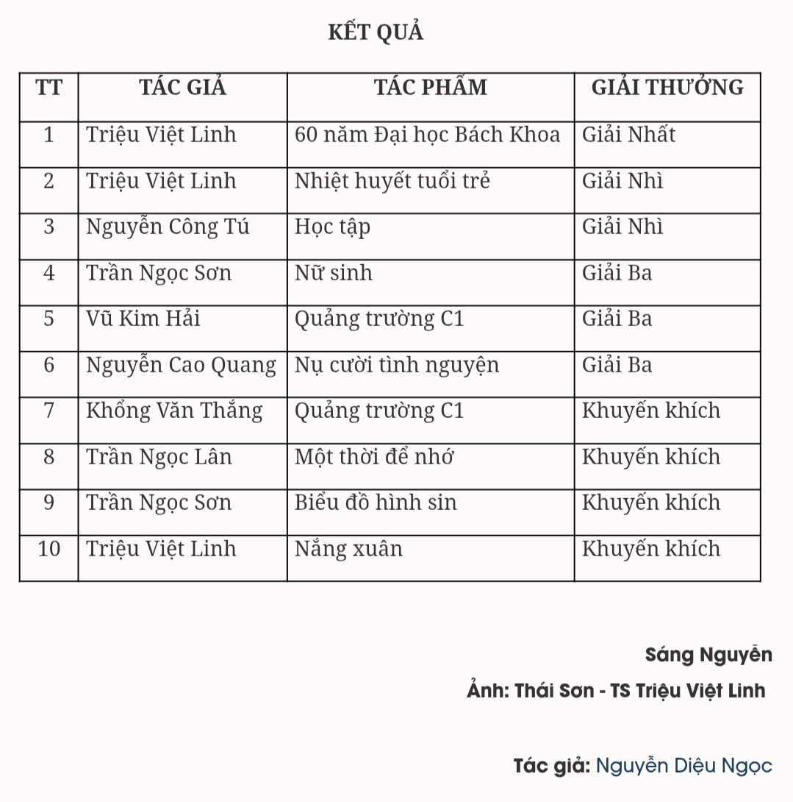

Câu lạc bộ thể thao Bách Khoa Hà Nội
Tin Tức Thể Thao Nổi Bật
Người thầy mang doanh nghiệp đến giảng đường
Thứ hai - 26/01/2026 08:00
PGS. Trương Đức Phức (thứ 3 từ trái qua) và các sinh viên ĐHBK Hà Nội trong chuyến tham quan Nhà máy Nissei Technology (3/2025)
>> Xem bài viết trong Đặc san Đại học Bách khoa Hà Nội TẠI ĐÂY
Một ngày tháng 10/2024, phòng thí nghiệm Khuôn mẫu và Công nghệ đúc ép phun - dự án hợp tác và được tài trợ bởi Tập đoàn Nissei Technology Nhật Bản cùng các đối tác (SME HUST – NISSEI TECHNOLOGY JOINT LAB) mới khai trương của Trường Cơ khí - Đại học Bách khoa Hà Nội rộn ràng tiếng nói cười. Hôm ấy, ông Tsujihana Hitoshi - Chủ tịch Tập đoàn Nissei Technology, Nhật Bản - đã trực tiếp đứng lớp giảng dạy bài học đầu tiên tại phòng thí nghiệm do chính Tập đoàn của ông tài trợ.
Ông Tsujihana Hitoshi bước lên bục giảng không phải với vai trò của một nhà đầu tư hay đối tác, mà như một người bạn đồng hành của sinh viên Bách khoa. Đó không chỉ là bài giảng kỹ thuật mà còn là bài học về tinh thần trách nhiệm và niềm tự hào của người làm nghề. Giây phút ấy, không khí lớp học tại Đại học Bách khoa Hà Nội trở nên đặc biệt khi doanh nghiệp và giảng đường thật sự gặp nhau trong cùng một niềm tin, một lý tưởng đào tạo những kỹ sư làm chủ công nghệ tương lai.
Ông Tsujihana Hitoshi - Chủ tịch Tập đoàn Nissei Technology - đứng lớp tiết học đầu tiên tại SME HUST - NISSEI TECHNOLOGY JOINT LAB, Trường Cơ khí, ĐHBK Hà Nội (10/2024)

Từ ý tưởng nhỏ đến mô hình hợp tác lớn
Câu chuyện của buổi học ấy bắt đầu từ một cuộc gặp gỡ giản dị giữa ông Tsujihana và PGS. Trương Đức Phức, giảng viên Trường Cơ khí. Năm ấy, đến thăm trường, vị chủ tịch người Nhật nhìn thấy sự say mê trong đôi mắt của thầy giáo trẻ khi anh giới thiệu những bộ khuôn mẫu và sản phẩm mà mình tự mang về từ các nhà máy để dạy sinh viên. Có lẽ, sự nhiệt thành, trách nhiệm của thầy giáo Bách khoa đã chạm đến trái tim tha thiết muốn cống hiến một điều gì đó cho Việt Nam của vị doanh nhân Nhật Bản. Và cũng từ đó, Nissei Technology quyết định đồng hành, cùng Bách khoa dựng nên một phòng thí nghiệm hiện đại, nơi tri thức và công nghệ song hành.
Chỉ trong 7 tháng, phòng thí nghiệm đã thành hình. Máy móc được chuyển từ Nhật Bản về, kỹ sư từ doanh nghiệp sang lắp đặt và sinh viên háo hức chờ ngày được chạm vào thiết bị thực. Ngày 18/10/2024, Joint Lab đầu tiên giữa Trường Cơ khí và Tập đoàn Nissei Technology chính thức khánh thành, đánh dấu bước ngoặt trong mô hình hợp tác giữa đại học và doanh nghiệp. Điều quý nhất là sinh viên Cơ khí Bách khoa được học trên máy, thiết bị như thực tế ngoài doanh nghiệp, tiếp cận các công nghệ sản xuất tiên tiến, được hướng dẫn và hỗ trợ bởi các chuyên gia của Tập đoàn và gần 20 đối tác trong hệ sinh thái, do đó có thể làm việc tốt ngay khi ra trường.
“Điều chúng tôi làm là ‘All win, All better’ - tất cả cùng có lợi và đều trở nên tốt hơn. Nhà trường có thiết bị hiện đại phục vụ đào tạo và nghiên cứu, doanh nghiệp và xã hội có nguồn nhân lực chất lượng cao, sinh viên là đối tượng trung tâm và được hưởng lợi nhất vì được học tập, thực hành trong môi trường hiện đại…” - PGS. Trương Đức Phức chia sẻ.
Lễ cắt băng khánh thành Phòng thí nghiệm khuôn mẫu và công nghệ đúc ép phun do Tập đoàn Nissei Technology cùng 11 doanh nghiệp Nhật Bản tài trợ (10/2024)
Lan tỏa tinh thần hợp tác, tạo giá trị cho tương lai
Mô hình hợp tác ấy không dừng lại ở phòng thí nghiệm đầu tiên. Từ thành công của dự án, Trường Cơ khí tiếp tục mở rộng hợp tác với nhiều doanh nghiệp khác trong hệ sinh thái của Nissei Technology. Makino, Accretech và nhiều tập đoàn công nghệ quốc tế đã lần lượt tham gia tài trợ máy móc, thiết bị theo nhiều hình thức khác nhau, tạo thêm 2 phòng thí nghiệm “Joint Lab” hiện đại với tổng giá trị hàng chục tỷ đồng.
Những chuyến tham quan, thực tập tại nhà máy, những buổi đào tạo, chia sẻ từ các chuyên gia của doanh nghiệp đã mở ra nhiều cơ hội cho sinh viên Bách khoa. Các em được học trong giảng đường, được thực hành trên chính những thiết bị mà doanh nghiệp đang sử dụng, được chuyên gia quốc tế đào tạo, được trao học bổng và được rèn luyện trong môi trường chuẩn công nghiệp.
Thành công của mô hình cũng đã được TS. Đinh Văn Duy - đồng nghiệp của thầy Phức tại Trường Cơ khí - tiếp nối và phát triển. Thầy Duy đã xây dựng 2 phòng thí nghiệm mới thuộc nhóm ngành Gia công áp lực được doanh nghiệp tài trợ, cho mượn máy móc và chia sẻ công nghệ.
Sau hơn 1 năm, từ một phòng thí nghiệm đầu tiên, giờ đây Trường Cơ khí đã có thêm nhiều phòng học, phòng lab doanh nghiệp cùng vận hành, cùng hướng tới mục tiêu chung: Đào tạo ra những kỹ sư Bách khoa bản lĩnh, tự tin và sẵn sàng hội nhập.

PGS. Trương Đức Phức thao tác trên các máy móc tại Phòng thí nghiệm khuôn mẫu và công nghệ đúc ép phun do Tập đoàn Nissei Technology cùng 11 doanh nghiệp Nhật Bản tài trợ
Đối với PGS. Trương Đức Phức và các thầy, cô giáo Trường Cơ khí, Đại học Bách khoa Hà Nội, việc kết nối giữa Nhà trường - Doanh nghiệp không chỉ là một dự án hợp tác mà còn là nơi ươm tạo những thế hệ sinh viên tài năng, nhiệt huyết.
Có nhiều chuyên gia từ Nhật Bản hay Thái Lan sang đào tạo, chia sẻ cho sinh viên Bách khoa về chuyên môn và kinh nghiệm thực tế. Ngoài ra, còn có các khóa đào tạo về quản lý sản xuất theo các mô hình tiên tiến.
Những nỗ lực thầm lặng ấy đã góp phần định hình một thế hệ kỹ sư Bách khoa chuyên nghiệp, bản lĩnh và hội nhập. Đó cũng là hình ảnh đẹp nhất về người thầy Bách khoa hôm nay: Những người không ngừng sáng tạo, kết nối và cống hiến để tri thức không dừng lại trong giảng đường.
Tác giả: Gia Hân